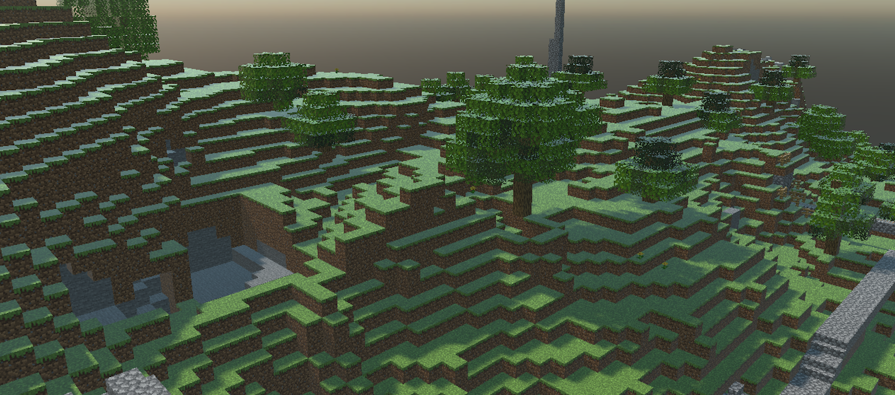
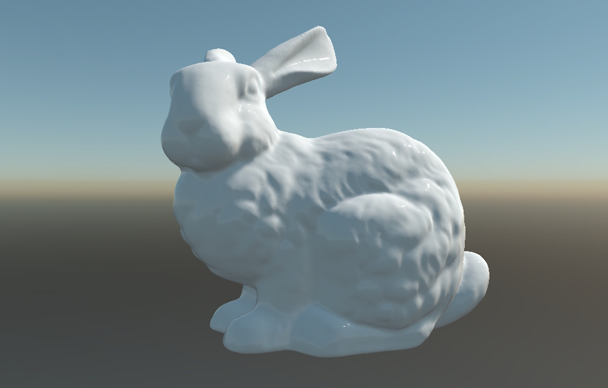
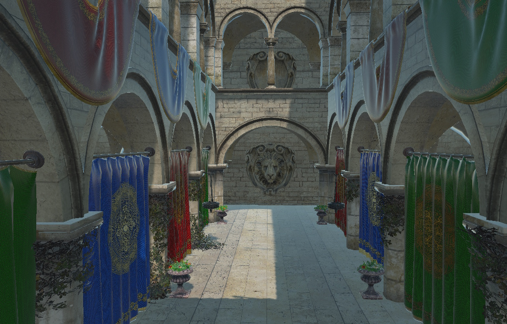
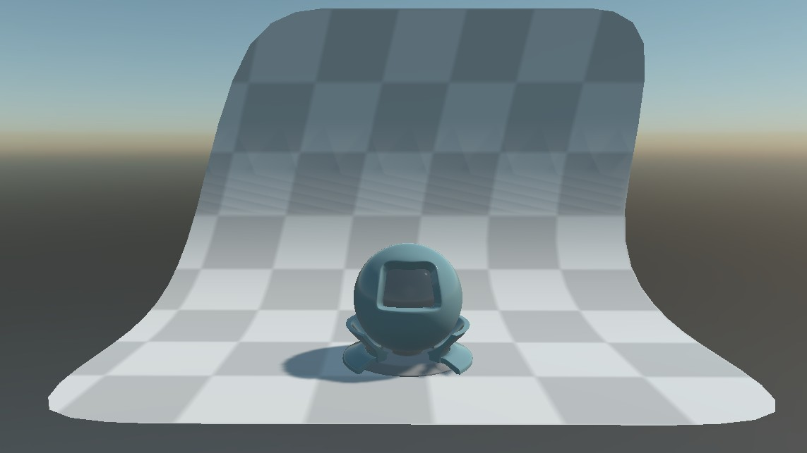
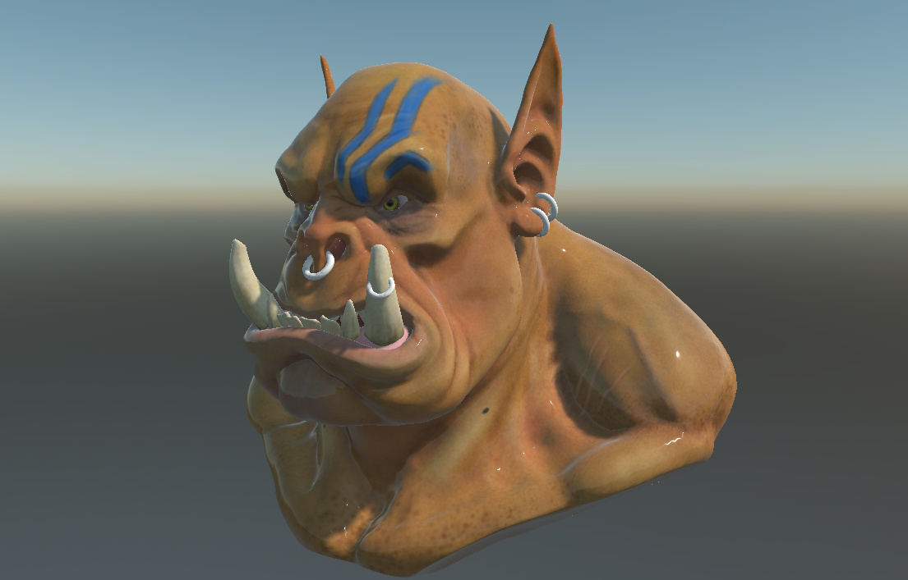

OBJ Runtime Models

The Evergine.Runtime.OBJ NuGet package provides a powerful and efficient solution for dynamically loading OBJ models at runtime. It is designed for real-time 3D applications and integrates seamlessly into your Evergine projects.
Supported OBJ Features
The Evergine.Runtime.OBJ namespace includes a robust OBJ file loader that supports a comprehensive range of mesh and material features:
✅ Features
1. Geometry
- Vertices, normals, and UVs (texture coordinates)
- Supports:
- Triangles and quads (auto-triangulated)
- Arbitrary polygon faces
- Multiple mesh groups per file
2. Basic Materials
- Supports
.mtlfiles:- Ambient (
Ka), Diffuse (Kd), and Specular (Ks) colors - Shininess (
Ns) and transparency
- Ambient (
3. PBR Materials
- Metallic–roughness and specular–glossiness workflows
- Support for roughness, metallic, and normal maps
4. Textures
- Diffuse/albedo, normal, specular/metallic, and emissive textures
- Common formats supported: PNG, JPG, BMP
5. Transparency
- Parses
dandTrvalues from.mtlfor alpha transparency - Automatic blend mode configuration
6. Points & Lines
- Point cloud and wireframe geometry support
- Renders
vandlcommands directly from.objfiles
Getting Started
To start using the Evergine.Runtimes.GLB or Evergine.Runtimes.STL libraries, simply install the NuGet package and use the following code to load your assets:
protected async override void CreateScene()
{
var model = await OBJRuntime.Instance.Read("MyModel.obj");
var assetsService = Application.Current.Container.Resolve<AssetsService>();
var entity = model.InstantiateModelHierarchy(assetsService);
this.manager.EntityManager.Add(entity);
}
Custom Shader Support
By default, models are loaded using the Standard Effect (Evergine’s built-in shader). However, if you want to load models using your custom shader, you must pass an additional CustomMaterialAssigner function to the Read method:
protected async override void CreateScene()
{
var assetsService = Application.Current.Container.Resolve<AssetsService>();
var model = await OBJRuntime.Instance.Read("Models/orc.obj", this.CustomMaterialAssigner);
var entity = model.InstantiateModelHierarchy(assetsService);
this.Managers.EntityManager.Add(entity);
}
Samples
This OBJ loader has been extensively tested against the full Comprehensive 3D Models dataset, ensuring compatibility with a wide variety of real‑world meshes, materials, and topology cases. Below are a few representative screenshots of models loaded and rendered at runtime:
Some screenshots

Stanford Bunny was created by Greg Turk and Marc Levoy from multiple range scans of a real object using a Cyberware 3030 MS scanner.

The Atrium Sponza Palace in Dubrovnik, re-modeled by Frank Meinl at Crytek with inspiration from Marko Dabrovic's original.

This is the standard material test object provided with the Mitsuba renderer. we converted it to a single OBJ file and separated the backdrop.

This orc was originally created on zbrush and exported as obj file.